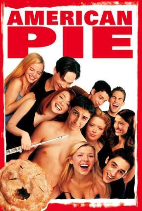

American Pie
Diretor: Paul Weitz e Chris Weitz
Com: Jason Bigs, Shannon Elizabeth, Alyson Hannigan, Chris Klein, Natasha Lyonne, Thomas Ian Nicholas
Censura:16 anos
Tempo de duração: 95 min
Sinopse: Jim, Oz, Finch e Kevin são quatro amigos que fazem um pacto que, antes de se formarem, todos perderão a virgindade. O trabalho mais difícil agora é como atingir esse objetivo na noite do baile. Enquanto Oz começa a cantar para chamar a atenção e Kevin tenta convencer sua namorada, Finch tenta qualquer rota fácil de espalhar boatos e Jim falha miseravelmente. Esteja sendo pego em cima de uma torta ou na Internet, Jim sempre termina com seu fiel conselho sexual de seu pai. Eles alcançarão seu objetivo de transar na noite do baile? Ou eles aprenderão algo muito diferente?